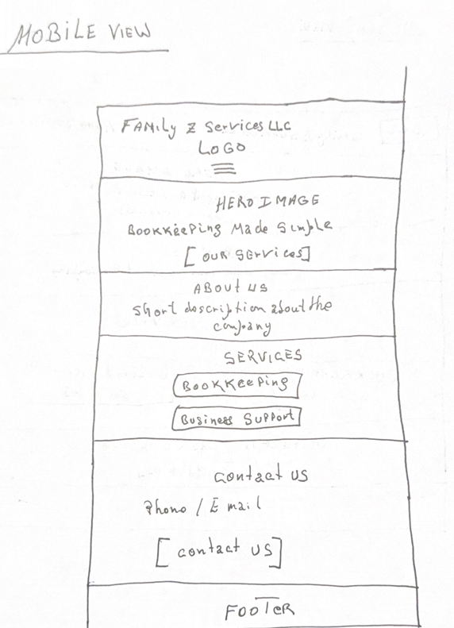
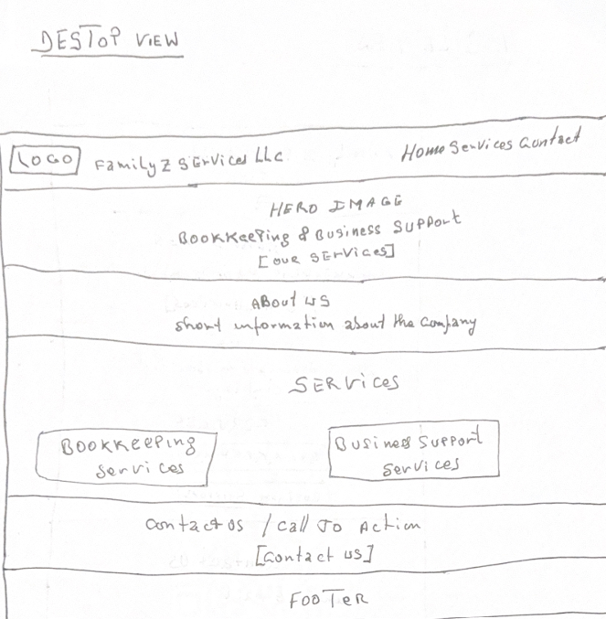

Site Name
Family Z Services LLC
This name was selected because it is the official name of the business and clearly identifies the company to potential clients.
Site Purpose
The purpose of this website is to provide information about Family Z Services LLC and its bookkeeping and business support services. Visitors will be able to learn about the company, explore available services, and find information about how to contact the business.
Scenarios
- What bookkeeping services does Family Z Services LLC offers?
- How can I contact Family Z Services LLC for business support?
Color Scheme
Dark Blue (#16324f): Used for headings, the header, and important elements.
Light Blue (#D9EEF7): Used for section backgrounds and accent areas.
White (#FFFFFF): Used for the main background and text on dark backgrounds.
Typography
Roboto Used for headings and navigation.
Open Sans: Used for paragraphs general website content.
Wireframes
Mobile View

Desktop View
